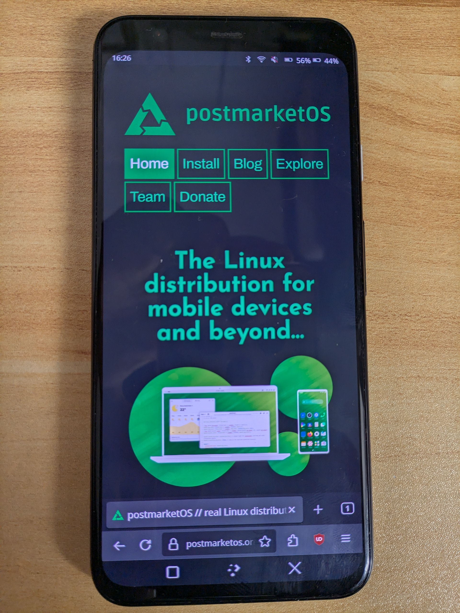

Google Pixel 4 (google-flame)
| This device has been tested with postmarketOS, but its device package has not yet been added to the postmarketOS repositories. This means that it cannot be selected in pmbootstrap. |
|
 Pixel 4 running Plasma Mobile, displaying the PostmarketOS website. | |
| Manufacturer | |
|---|---|
| Name | Pixel 4 |
| Codename | google-flame |
| Released | 2019 |
| Type | handset |
| Hardware | |
| Chipset | Qualcomm Snapdragon 855 (SM8150) |
| CPU |
Octa-core (1x2.84 GHz Kryo 485 3x2.42 GHz Kryo 485 4x1.78 GHz Kryo 485) |
| GPU | Adreno 640 |
| Display | 1080 x 2280 P-OLED, 90Hz, HDR |
| Storage | 64 or 128 GB |
| Memory | 6 GB |
| Architecture | aarch64 |
| Software | |
Original software
The software and version the device was shipped with.
|
Android 10 |
Extended version
The most recent supported version from the manufacturer.
|
Android 13 |
| FOSS bootloader | no |
| postmarketOS | |
Pre-built images
Whether pre-built images are available here.
|
N |
Mainline
Instead of a Linux kernel fork, it is possible to run (Close to) Mainline.
|
no |
pmOS kernel
The kernel version that runs on the device's port.
|
6.15 |
Unixbench score
Unixbench Whetstone/Dhrystone score. See Unixbench.
|
8000.1 |
| Firmware package | firmware-google-flame |
{kind=link}
Flashing
It is possible to flash the device with
pmbootstrap flasher. |
Works
|
|---|---|
USB Networking
After connecting the device with USB to your PC, you can connect to it via telnet (initramfs) or SSH (booted system).
|
Works
|
Internal storage
eMMC, SD cards, UFS, ...
|
Works
|
Battery
Charging and battery level reporting works
|
Works
|
Screen
Display works. Ideally with sleep mode and brightness control.
|
Works
|
Touchscreen |
Works
|
| Multimedia | |
3D Acceleration |
Works
|
Audio
Audio playback, microphone, headset and buttons.
|
Broken
|
Camera |
Broken
|
Camera Flash |
Works
|
| Connectivity | |
WiFi |
Works
|
Bluetooth |
Works
|
GPS |
Broken
|
NFC
Near Field Communication
|
Broken
|
| Modem | |
Calls |
Broken
|
SMS |
Broken
|
Mobile data |
Broken
|
| Miscellaneous | |
FDE
Full disk encryption and unlocking with unl0kr.
|
Broken
|
USB OTG
USB On-The-Go or USB-C Role switching
|
Broken
|
HDMI/DP
Video and audio output with HDMI or Display Port works.
|
Broken
|
| Sensors | |
Accelerometer
Auto screen rotation works in desktops e.g. Phosh or Plasma Mobile
|
Broken
|
Magnetometer
Sensor to measure magnetism
|
Broken
|
Ambient Light |
Broken
|
Proximity |
Broken
|
Hall Effect
Also known as flip cover sensor
|
Broken
|
Haptics |
Broken
|
Barometer
Sensor to measure air pressure
|
Broken
|
Secondary Bootloader
It is possible to chainload U-Boot from stock bootloader.
|
Works
|
|---|---|
Mainline
Latest versions of U-Boot are not broken and it is possible to use them.
|
Works
|
Internal Storage
It is possible to boot from internal storage (e.g. eMMC or UFS).
|
Works
|
USB Host
It is possible to boot from a USB storage or connect a keyboard.
|
Partial
|
USB Peripheral
It is possible to use device as a peripheral in U-Boot, e.g. for fastboot mode.
|
Works
|
Display |
Works
|
Buttons
It is possible to navigate in boot menu or grub with volume and power buttons.
|
Works
|
How to enter flash mode
- Fastboot Mode: Turn on the device while holding Power+Volume Down until the fastboot screen appears, showing device information. From this mode, you can flash PostmarketOS. Use the volume keys to navigate and power to select options such as Start, Power off, BarCode, Rescue Mode, Recovery Mode, and Restart Bootloader.
- Recovery Mode: Turn on the device while holding Power+Volume Up until the recovery screen appears. It can also be accessed via Fastboot Mode. Note that recovery mode is only available if a valid recovery image exists in the current slot of the super partition.
- U-Boot Menu: Power on the device and wait for the Google logo, then immediately press and hold until the U-Boot menu appears. For more details, see U-boot and here.
| Note: Pressing the keys too early may cause the stock bootloader to handle the key combination, leading to the wrong mode. |
Installation
Prerequisites
Upgrade
Before installing postmarketOS, it is recommended that you update your device to the latest available release. This can be done easily by visiting http://flash.android.com/ from a Chromium based browser and following the instructions.
Unlock the bootloader
| WARNING: Unlocking the bootloader will ERASE ALL USER DATA, including apps, settings, and internal storage. Make a complete backup before proceeding. |
| If you already have a custom ROM installed with the bootloader unlocked, you can skip this section. |
On Android, go to the page in the Settings app. Click on the build number 7 times to enable developer settings. You will be prompted for your PIN or password.
In the Settings main page, go to , then . Enable .
No unlock codes are needed to enable unlocking on this device.
Before flashing anything, you need to unlock the bootloader in fastboot mode with this command:
$ fastboot flashing unlock
Follow the prompts on your device's screen to complete the operation.
Building and flashing
| TODO: Add building and flashing process (very similar to Pixel 4a) |
Mainline Status
A mainline kernel is currently under development here using the sm8150-google-flame.dts device tree.
| Component | Model | DeviceTree configuration? | Driver on sm8150-mainline tree? | Driver on torvalds tree? | Notes |
|---|---|---|---|---|---|
| Chipset | SM8150 | Yes | Yes | Yes | |
| PMICs (Power Management IC) | PM8150, PM8150B and PM8150L | Yes | Yes | Yes | |
| GPU | Adreno 640 | Yes | Yes | Yes | |
| Wi-Fi & Bluetooth | WCN3990 | Yes | Yes | Yes | |
| Display | LG LH568WF3-ED01 panel with a NT37280 controller | Yes | Not yet [1] | No | |
| Touchscreen | Novatek NT11206 | Yes | Not yet [2] | No | |
| Battery | G020I-B with built-in max17201 chip | Yes | Yes, but needs an extra patch [3] | Same as sm8150-mainline tree | |
| Thermal Sensing | Feature of the PMICs | Yes | Yes | Yes | Can be measured with sensors command
|
Partition layout
google-flame:~# fdisk -l -o Device,Start,End,Sectors,Size,Name /dev/sda
Disk /dev/sda: 59.48 GiB, 63870861312 bytes, 15593472 sectors Disk model: H28U72301CMR Units: sectors of 1 * 4096 = 4096 bytes Sector size (logical/physical): 4096 bytes / 4096 bytes I/O size (minimum/optimal): 524288 bytes / 524288 bytes Disklabel type: gpt Disk identifier: 00000000-0000-0000-0000-000000000000 Device Start End Sectors Size Name /dev/sda1 6 7 2 8K ssd /dev/sda2 8 8199 8192 32M persist /dev/sda3 8200 8455 256 1M misc /dev/sda4 8456 8583 128 512K keystore /dev/sda5 8584 8711 128 512K frp /dev/sda6 8712 25095 16384 64M boot_a /dev/sda7 25096 41479 16384 64M boot_b /dev/sda8 41480 66055 24576 96M modem_a /dev/sda9 66056 90631 24576 96M modem_b /dev/sda10 90632 92679 2048 8M klog /dev/sda11 92680 96775 4096 16M metadata /dev/sda12 96776 96791 16 64K vbmeta_system_a /dev/sda13 96792 96807 16 64K vbmeta_system_b /dev/sda14 98304 2480127 2381824 9.1G super /dev/sda15 2482176 15593466 13111291 50G userdata Partition 1 does not start on physical sector boundary. Partition 2 does not start on physical sector boundary. Partition 3 does not start on physical sector boundary. Partition 4 does not start on physical sector boundary. Partition 5 does not start on physical sector boundary. Partition 6 does not start on physical sector boundary. Partition 7 does not start on physical sector boundary. Partition 8 does not start on physical sector boundary. Partition 9 does not start on physical sector boundary. Partition 10 does not start on physical sector boundary. Partition 11 does not start on physical sector boundary. Partition 12 does not start on physical sector boundary. Partition 13 does not start on physical sector boundary.
google-flame:~# fdisk -l -o Device,Start,End,Sectors,Size,Name /dev/sdb
Disk /dev/sdb: 8 MiB, 8388608 bytes, 2048 sectors Disk model: H28U72301CMR Units: sectors of 1 * 4096 = 4096 bytes Sector size (logical/physical): 4096 bytes / 4096 bytes I/O size (minimum/optimal): 524288 bytes / 524288 bytes Disklabel type: gpt Disk identifier: 00000000-0000-0000-0000-000000000000 Device Start End Sectors Size Name /dev/sdb1 6 901 896 3.5M xbl_a /dev/sdb2 902 933 32 128K xbl_config_a /dev/sdb3 934 2042 1109 4.3M last_parti Partition 1 does not start on physical sector boundary. Partition 2 does not start on physical sector boundary. Partition 3 does not start on physical sector boundary.
google-flame:~# fdisk -l -o Device,Start,End,Sectors,Size,Name /dev/sdc
Disk /dev/sdc: 8 MiB, 8388608 bytes, 2048 sectors Disk model: H28U72301CMR Units: sectors of 1 * 4096 = 4096 bytes Sector size (logical/physical): 4096 bytes / 4096 bytes I/O size (minimum/optimal): 524288 bytes / 524288 bytes Disklabel type: gpt Disk identifier: 00000000-0000-0000-0000-000000000000 Device Start End Sectors Size Name /dev/sdc1 6 901 896 3.5M xbl_b /dev/sdc2 902 933 32 128K xbl_config_b /dev/sdc3 934 2042 1109 4.3M last_parti Partition 1 does not start on physical sector boundary. Partition 2 does not start on physical sector boundary. Partition 3 does not start on physical sector boundary.
google-flame:~# fdisk -l -o Device,Start,End,Sectors,Size,Name /dev/sdd
Disk /dev/sdd: 8 MiB, 8388608 bytes, 2048 sectors Disk model: H28U72301CMR Units: sectors of 1 * 4096 = 4096 bytes Sector size (logical/physical): 4096 bytes / 4096 bytes I/O size (minimum/optimal): 524288 bytes / 524288 bytes Disklabel type: gpt Disk identifier: A8603242-F165-21AD-78E7-4D8E0F4EF4FA Device Start End Sectors Size Name /dev/sdd1 6 31 26 104K ALIGN_TO_128K_1 /dev/sdd2 32 63 32 128K cdt /dev/sdd3 64 319 256 1M ddr /dev/sdd4 320 320 1 4K last_parti Partition 1 does not start on physical sector boundary. Partition 2 does not start on physical sector boundary. Partition 3 does not start on physical sector boundary. Partition 4 does not start on physical sector boundary.
google-flame:~# fdisk -l -o Device,Start,End,Sectors,Size,Name /dev/sde
Disk /dev/sde: 64 MiB, 67108864 bytes, 16384 sectors Disk model: H28U72301CMR Units: sectors of 1 * 4096 = 4096 bytes Sector size (logical/physical): 4096 bytes / 4096 bytes I/O size (minimum/optimal): 524288 bytes / 524288 bytes Disklabel type: gpt Disk identifier: 00000000-0000-0000-0000-000000000000 Device Start End Sectors Size Name /dev/sde1 6 133 128 512K aop_a /dev/sde2 134 1157 1024 4M tz_a /dev/sde3 1158 1289 132 528K hyp_a /dev/sde4 1290 1801 512 2M abl_a /dev/sde5 1802 1929 128 512K keymaster_a /dev/sde6 1930 2057 128 512K cmnlib_a /dev/sde7 2058 2185 128 512K cmnlib64_a /dev/sde8 2186 2217 32 128K devcfg_a /dev/sde9 2218 2237 20 80K qupfw_a /dev/sde10 2238 2253 16 64K vbmeta_a /dev/sde11 2254 4301 2048 8M dtbo_a /dev/sde12 4302 4813 512 2M uefisecapp_a /dev/sde13 4814 5325 512 2M imagefv_a /dev/sde14 5326 5341 16 64K apdp_a /dev/sde15 5342 5357 16 64K msadp_a /dev/sde16 5358 5365 8 32K multiimgoem_a /dev/sde17 5366 5493 128 512K aop_b /dev/sde18 5494 6517 1024 4M tz_b /dev/sde19 6518 6649 132 528K hyp_b /dev/sde20 6650 7161 512 2M abl_b /dev/sde21 7162 7289 128 512K keymaster_b /dev/sde22 7290 7417 128 512K cmnlib_b /dev/sde23 7418 7545 128 512K cmnlib64_b /dev/sde24 7546 7577 32 128K devcfg_b /dev/sde25 7578 7597 20 80K qupfw_b /dev/sde26 7598 7613 16 64K vbmeta_b /dev/sde27 7614 9661 2048 8M dtbo_b /dev/sde28 9662 10173 512 2M uefisecapp_b /dev/sde29 10174 10685 512 2M imagefv_b /dev/sde30 10686 10701 16 64K apdp_b /dev/sde31 10702 10717 16 64K msadp_b /dev/sde32 10718 10725 8 32K multiimgoem_b /dev/sde33 10726 10726 1 4K devinfo /dev/sde34 10727 12774 2048 8M spunvm /dev/sde35 12775 12782 8 32K splash /dev/sde36 12783 12783 1 4K limits /dev/sde37 12784 13039 256 1M toolsfv /dev/sde38 13040 15087 2048 8M logfs /dev/sde39 15088 15119 32 128K storsec /dev/sde40 15120 15247 128 512K uefivarstore /dev/sde41 15248 15254 7 28K secdata /dev/sde42 15255 16378 1124 4.4M last_parti Partition 1 does not start on physical sector boundary. Partition 2 does not start on physical sector boundary. Partition 3 does not start on physical sector boundary. Partition 4 does not start on physical sector boundary. Partition 5 does not start on physical sector boundary. Partition 6 does not start on physical sector boundary. Partition 7 does not start on physical sector boundary. Partition 8 does not start on physical sector boundary. Partition 9 does not start on physical sector boundary. Partition 10 does not start on physical sector boundary. Partition 11 does not start on physical sector boundary. Partition 12 does not start on physical sector boundary. Partition 13 does not start on physical sector boundary. Partition 14 does not start on physical sector boundary. Partition 15 does not start on physical sector boundary. Partition 16 does not start on physical sector boundary. Partition 17 does not start on physical sector boundary. Partition 18 does not start on physical sector boundary. Partition 19 does not start on physical sector boundary. Partition 20 does not start on physical sector boundary. Partition 21 does not start on physical sector boundary. Partition 22 does not start on physical sector boundary. Partition 23 does not start on physical sector boundary. Partition 24 does not start on physical sector boundary. Partition 25 does not start on physical sector boundary. Partition 26 does not start on physical sector boundary. Partition 27 does not start on physical sector boundary. Partition 28 does not start on physical sector boundary. Partition 29 does not start on physical sector boundary. Partition 30 does not start on physical sector boundary. Partition 31 does not start on physical sector boundary. Partition 32 does not start on physical sector boundary. Partition 33 does not start on physical sector boundary. Partition 34 does not start on physical sector boundary. Partition 35 does not start on physical sector boundary. Partition 36 does not start on physical sector boundary. Partition 37 does not start on physical sector boundary. Partition 38 does not start on physical sector boundary. Partition 39 does not start on physical sector boundary. Partition 40 does not start on physical sector boundary. Partition 41 does not start on physical sector boundary. Partition 42 does not start on physical sector boundary.
google-flame:~# fdisk -l -o Device,Start,End,Sectors,Size,Name /dev/sdf
Disk /dev/sdf: 16 MiB, 16777216 bytes, 4096 sectors Disk model: H28U72301CMR Units: sectors of 1 * 4096 = 4096 bytes Sector size (logical/physical): 4096 bytes / 4096 bytes I/O size (minimum/optimal): 524288 bytes / 524288 bytes Disklabel type: gpt Disk identifier: 00000000-0000-0000-0000-000000000000 Device Start End Sectors Size Name /dev/sdf1 6 31 26 104K ALIGN_TO_128K_2 /dev/sdf2 32 543 512 2M modemst1 /dev/sdf3 544 1055 512 2M modemst2 /dev/sdf4 1056 1567 512 2M fsg /dev/sdf5 1568 1599 32 128K fsc /dev/sdf6 1600 4090 2491 9.7M last_parti Partition 1 does not start on physical sector boundary. Partition 2 does not start on physical sector boundary. Partition 3 does not start on physical sector boundary. Partition 4 does not start on physical sector boundary. Partition 5 does not start on physical sector boundary. Partition 6 does not start on physical sector boundary.
PostmarketOS Boot Process
┌──────────────────────────────────────────────────────┐
│ ROM (PBL / BootROM) │
│ - Qualcomm's immutable first stage │
└───────┬──────────────────────────────────────────────┘
│
│
▼
┌──────────────────────────────────────────────────────┐
│ XBL (Extensible Bootloader) │
│ - UEFI firmware: modular, drivers as DXE modules │
│ - Initializes RAM, TrustZone, USB, clocks, etc. │
│ - Launches ABL │
└────────────────────────────────┬─────────────────────┤
│ │xbl_a/xbl_b partition│
│ └─────────────────────┘
▼
┌──────────────────────────────────────────────────────┐
│ ABL (Android Bootloader) │
│ - UEFI application │
│ - Handles Fastboot, Linux kernel loading │
│ - Launches U-Boot (Secondary Bootloader) │
└───────┬────────────────────────┬─────────────────────┤
│ │abl_a/abl_b partition│
│ └─────────────────────┘
▼
┌──────────────────────────────────────────────────────┐
│ U-Boot (Secondary Bootloader) │
│ - Loads EFI binaries from UFS or USB │
│ - Cleans boot cmdline │
│ - Extra disk operations like USB mass storage │
└───────┬──────────────────────┬───────────────────────┤
│ │boot_a/boot_b partition│
│ └───────────────────────┘
▼
┌──────────────────────────────────────────────────────┐
│ PostmarketOS systemd-boot │
│ - EFI boot manager │
│ - Loads linux.efi (EFI stub kernel), ramdisk and │
│ cmdline │
└───────┬──────────────────┬───────────────────────────┤
│ │super partition (pmos_boot)│
│ └───────────────────────────┘
▼
┌──────────────────────────────────────────────────────┐
│ PostmarketOS linux.efi │
│ - EFI stub kernel │
│ - Mounts pmos_root (ext4 on userdata) │
│ - Starts PostmarketOS init system │
└──────────────────────────┬───────────────────────────┤
│ │super partition (pmos_boot)│
│ └───────────────────────────┘
▼
┌──────────────────────────────────────────────────────┐
│ PostmarketOS Userspace │
│ - (Plasma Mobile, Phosh, Sxmo, etc.) │
└───────────────────────┬──────────────────────────────┤
│userdata partition (pmos_root)│
└──────────────────────────────┘
Who has this device
Contributors
Maintainer(s)
Owners
- Shadowsvanish (Notes: Slowing porting hw to mainline)
- Shipa (Notes: fully works)